Service Manager 2012 R2 with SQL 2014
Microsoft announced support for SQL 2014 with Update Rollup 6 for System Center Service Manager 2012 R2. While working on a recent project, I wanted to explore the possibility of building a fresh instance of Service Manager 2012 R2 with SQL 2014.
Since UR 6 update is not slipstreamed in to System Center Service Manager R2 Media, if you try to install it against a SQL 2014 Server, you will not be able to proceed ahead with the install. Setup process will not be able to recognize the SQL environment and you will not be able to proceed ahead.
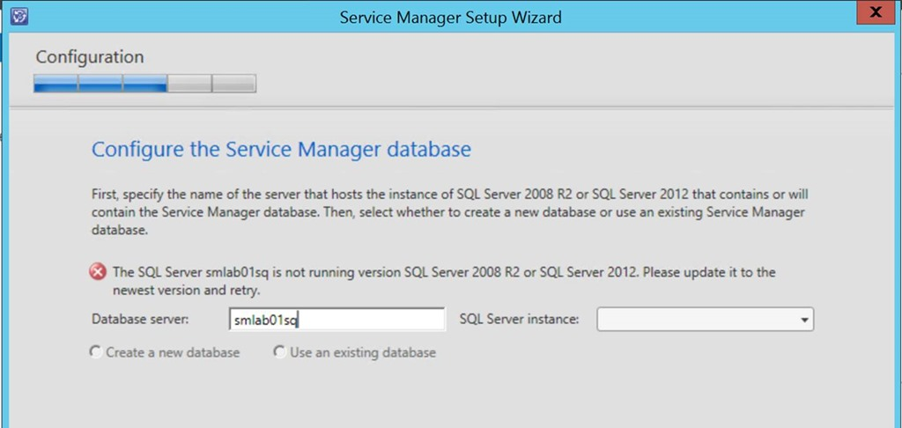
Reaching out to the product team, we don’t have any method of slipstreaming RTM Media to support for SQL 2014 install at this point in time. which means that the only option available is to first install against SQL 2012 Server and then upgrade to SQL 2014.
**Note that SharePoint 2010 is not supported with SQL 2014. if you have deployed Service Manager Self-Service Portal on the same SQL Server you will not be able to proceed ahead with the upgrade. Also not that SQL 2014 SP1 is not yet supported for Service Manager 2012 R2 CU6. Support for SQL 2014 SP1 will be added on a future update rollup.
Step 01 – Install Service Manager 2012 R2 RTM against a SQL 2012 Server
Step 02 – Update Service Manager 2012 R2 RTM environment with Update Rollup 6 (This is a cumulative update so its not required to apply UR1 to UR5 before applying UR6)
Step 03 – In place Upgrade SQL 2012 to SQL 2014
Run SQL 2014 Setup and select “Upgrade from SQL Server” Option
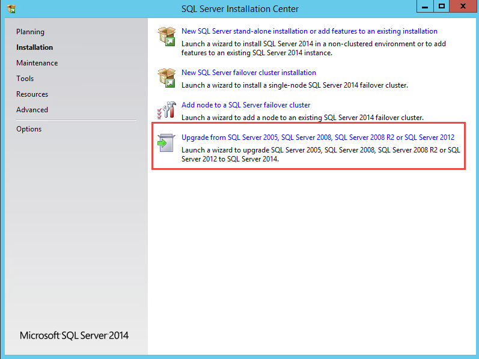
Proceed ahead and make sure that it’s not an evaluation edition if you are doing a production deployment.
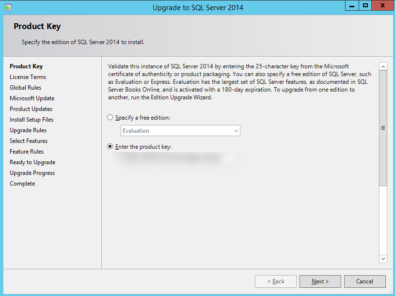
Accept licensing terms
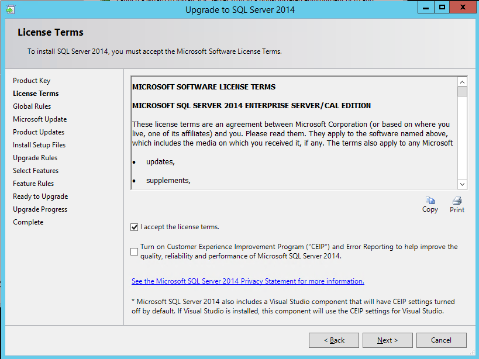
I have selected not to check for Updates at this point in time, and I will update SQL 2014 manually with supported CUs at a later stage. As pointed out before, Service Manager 2012 R2 UR6 does not support SQL 2014 SP1.
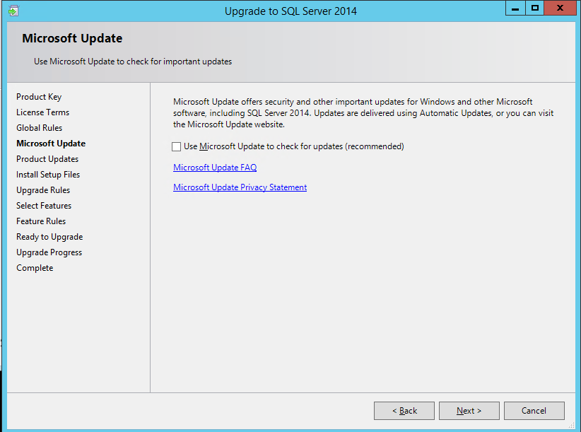
Select SQL Features which needs to be upgraded
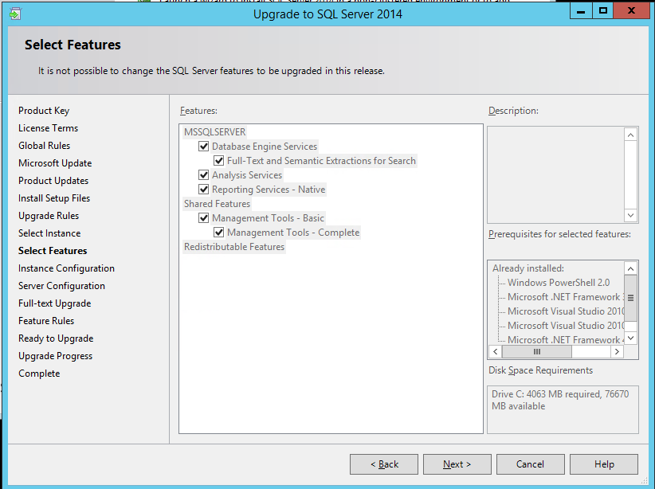
Select the SQL Instance
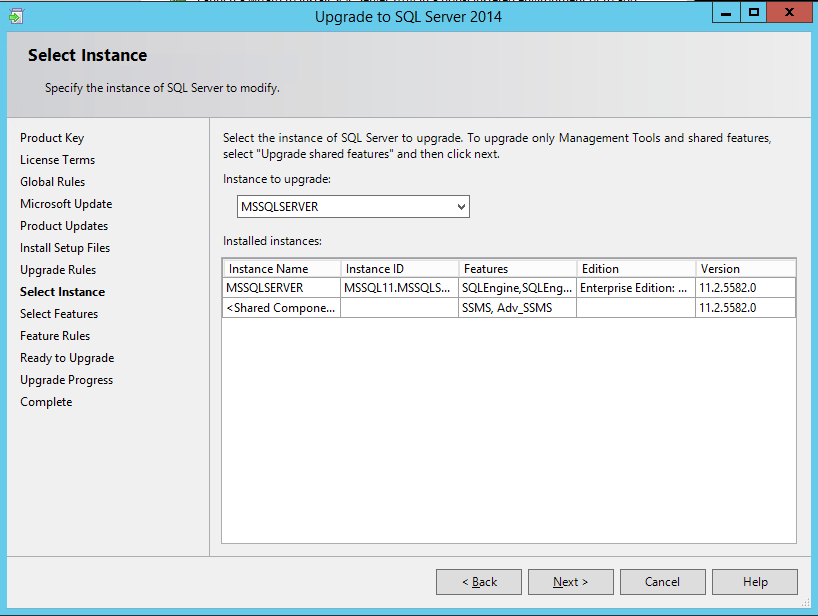
Verify Service Accounts
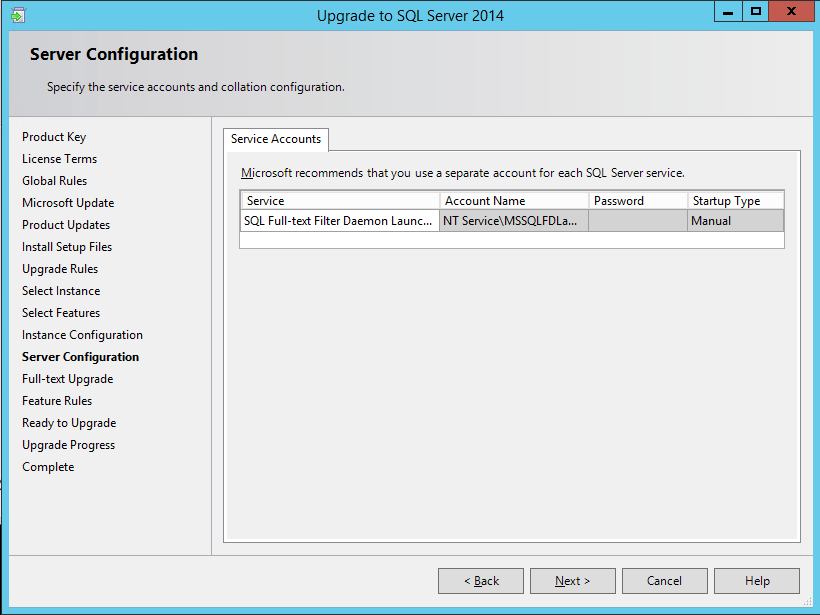
I have selected to re-build full-text search in this option. optionally you could also select Import option.
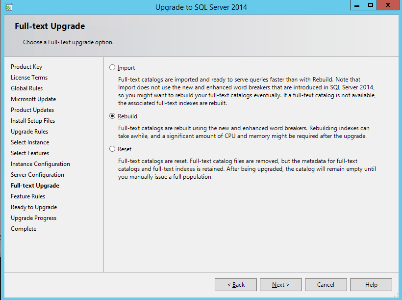
Summery Page and ready for the upgrade
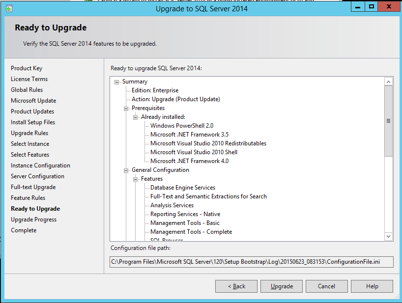
After few minutes, you can review SQL Upgrade status and check if all components were upgraded to SQL 2014
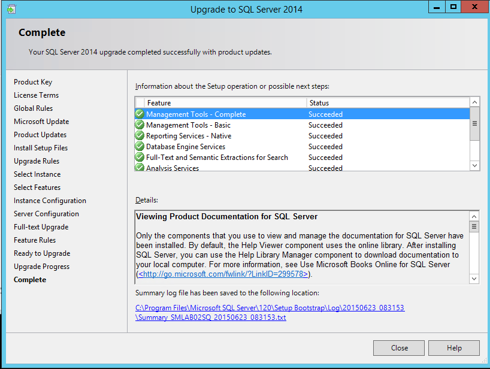
After upgrading both Service Manager Database Instance and also Data warehouse DB Instance, you now have Service Manager 2012 R2 UR6 running with SQL 2014.